← Index · ← Previous · Next →
Authors: Ralfs Āboliņš, Andris Ambainis
Type: theory · Category: quantum information and computing · PDF: https://arxiv.org/pdf/2605.22758v1
Analysis basis: full PDF text, analyzed in chunks
Topic relevance: entanglement & information structure 2/5
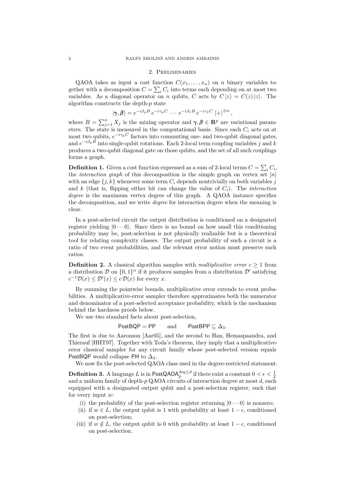
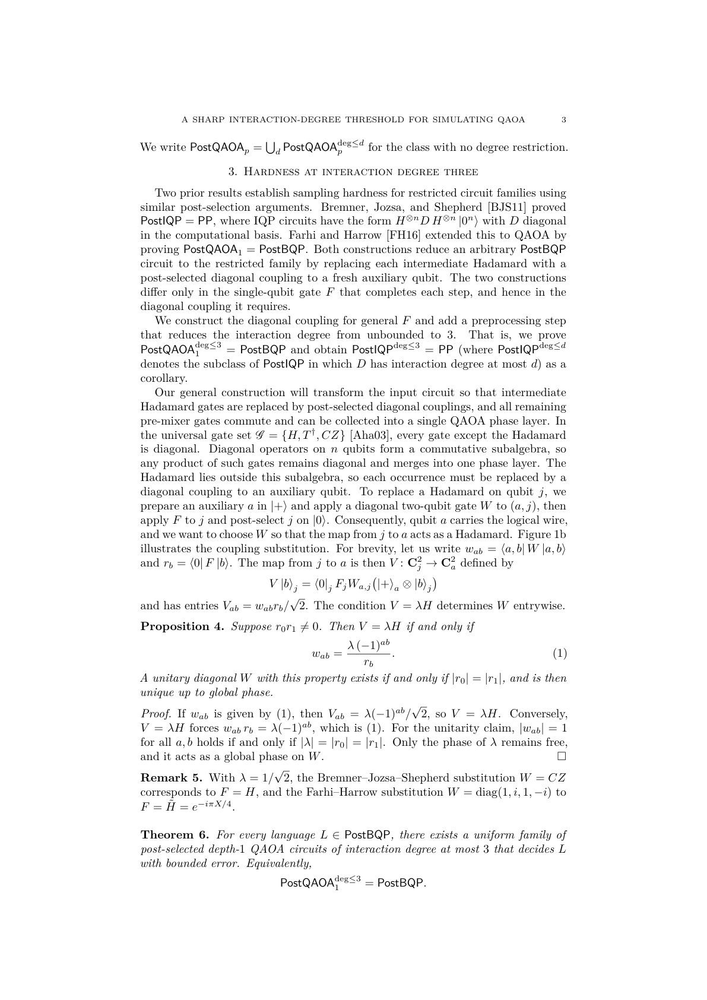
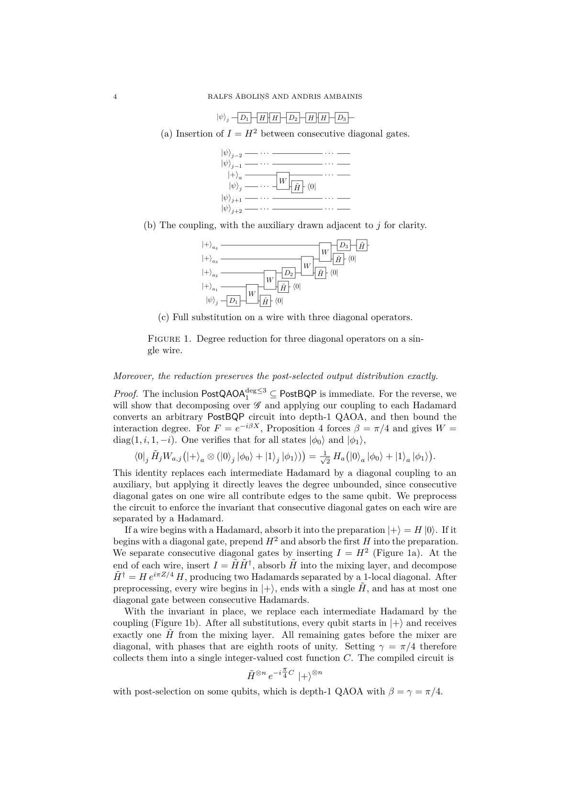
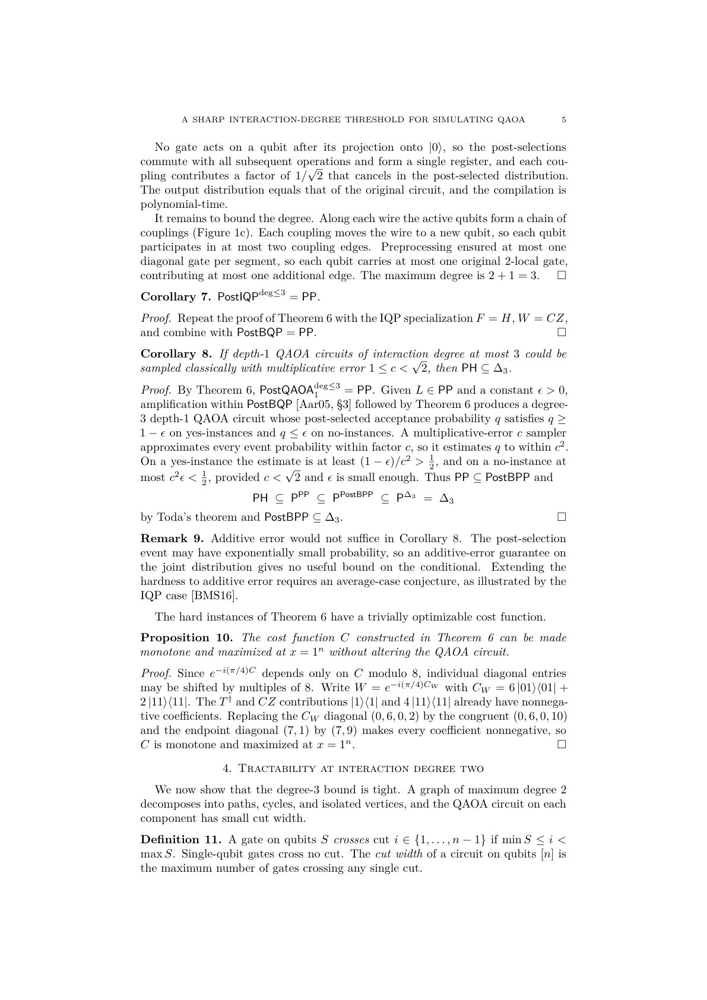
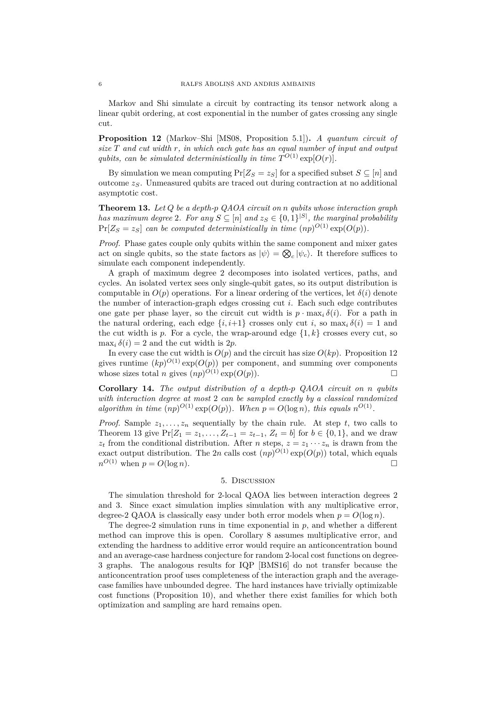
Summary. This paper establishes a sharp complexity threshold for simulating QAOA based on the interaction degree of the cost function. It proves that while degree-2 QAOA is efficiently simulatable, degree-3 QAOA is classically hard to sample from, providing a fundamental boundary for quantum advantage in optimization algorithms.
Why it may be interesting. not directly relevant
Main problem. The paper investigates whether there is a sharp threshold for the interaction degree of cost functions that determines the classical simulability of the Quantum Approximate Optimization Algorithm (QAOA).
Main result. The authors prove a sharp transition: at interaction degree 2, depth-p QAOA is classically simulatable in polynomial time for p = O(log n), whereas at degree 3, sampling from depth-1 QAOA is hard enough to collapse the polynomial hierarchy.
Method. The study uses complexity reductions from PostBQP to PostQAOA, circuit transformation techniques to bound interaction degrees, and the Markov-Shi algorithm for tensor network contraction.
Model / system. The model consists of depth-p QAOA circuits with 2-local cost functions defined on an interaction graph, utilizing a mixing operator B = sum of X_j.
Key observables. Marginal output probabilities and sampling distributions from the QAOA circuit.
Important parameters / regimes. Interaction degree (specifically the transition between degree 2 and 3), circuit depth p, and multiplicative error c.
Assumptions / limitations. The hardness result for degree 3 assumes a multiplicative error model; the simulation efficiency for degree 2 assumes p = O(log n).
Figures summary. Figure 1 illustrates the circuit preprocessing technique, showing how intermediate Hadamard gates are replaced by diagonal couplings to auxiliary qubits to bound the interaction degree.
Paper structure. The paper introduces the problem of interaction-degree thresholds, presents a preprocessing method for circuit transformation, proves the hardness of degree-3 sampling via complexity reduction, proves the tractability of degree-2 simulation using tensor network contraction, and discusses the distinction between sampling hardness and optimization advantage.
We identify a sharp interaction-degree threshold for the classical simulation of QAOA with $2$-local cost functions. At degree $3$, classical sampling from depth-$1$ QAOA with small multiplicative error would collapse the polynomial hierarchy to its third level. At degree $2$, exact classical sampling from depth-$p$ QAOA on $n$ qubits runs in time $n^{O(1)}$ whenever $p = O(\log n)$. The hard degree-$3$ instances have trivially optimizable cost functions, so sampling hardness does not by itself imply a quantum optimization advantage.
Authors: Alex Siebenmorgen, Juan G. Restrepo
Type: theory · Category: statistical mechanics · PDF: https://arxiv.org/pdf/2605.21844v1
Analysis basis: full PDF text, analyzed in chunks
Topic relevance: non-equilibrium dynamics 2/5
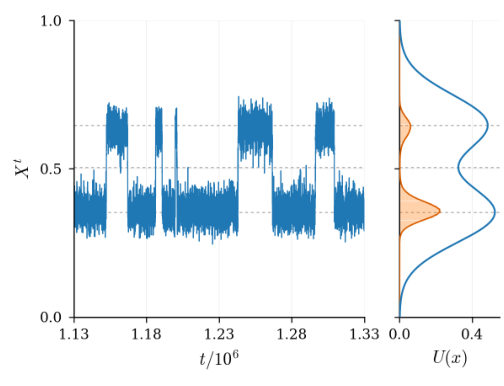
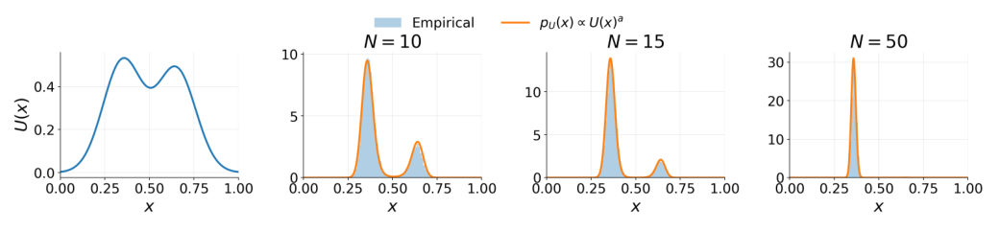
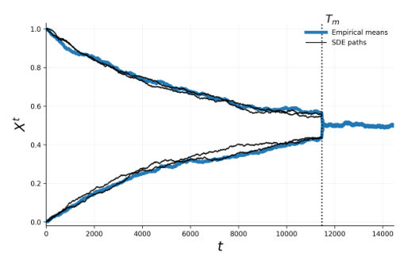
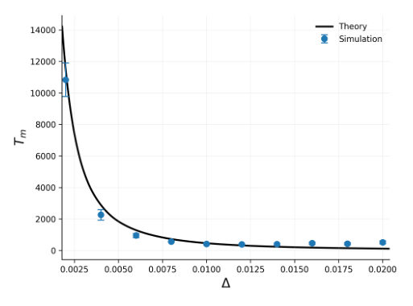
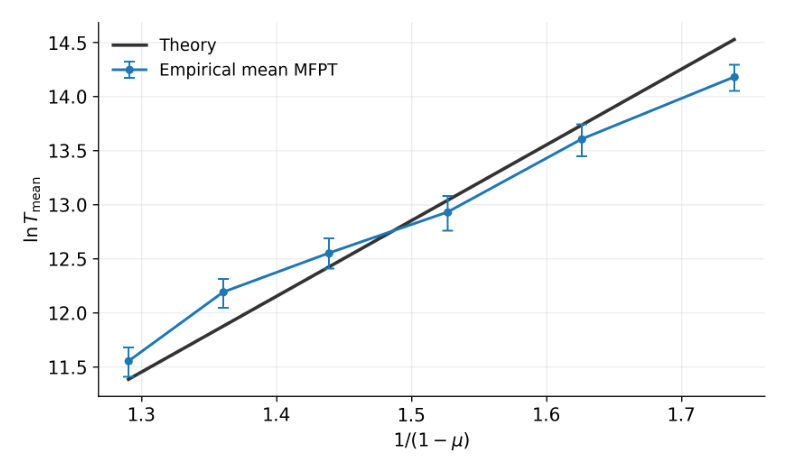
Summary. This paper develops an analytical framework for opinion dynamics where the desirability of certain states drives social influence. It shows that the system behaves like a thermodynamic system with an effective temperature, allowing for the prediction of opinion polarization and cluster merging using tools from statistical mechanics.
Why it may be interesting. not directly relevant
Main problem. The paper investigates how a utility function (representing the desirability of certain states) influences the evolution, polarization, and clustering of opinions in a bounded-confidence social dynamics model.
Main result. The authors derive that the mean opinion follows a Gibbs-like stationary distribution proportional to U(x)^a, where the effective temperature is controlled by the system size and learning rate, and they provide analytical estimates for opinion switching and cluster merging times.
Method. The study uses a small-spread expansion to derive a low-dimensional stochastic differential equation (SDE) and employs the Fokker-Planck equation, Kramers escape theory, and Ornstein-Uhlenbeck processes for analytical descriptions.
Model / system. An agent-based model of N agents with continuous opinions in [0, 1], interacting via a bounded-confidence mechanism where updates are driven by an asymmetric rule based on a utility function U(x) and subject to additive noise.
Key observables. Mean opinion (Xt), cluster variance (sigma^2), stationary distribution (p*(x)), Mean First-Passage Time (MFPT) for switching, and cluster merging time (Tm).
Important parameters / regimes. Learning rate (mu), confidence bound (epsilon), number of agents (N), noise intensity (Delta), and the utility function landscape U(x).
Assumptions / limitations. The derivation assumes a single-cluster regime, a first-order expansion of the utility function around the mean, and that fluctuations are weakly anti-correlated.
Figures summary. Figure 1 shows time series of mean opinion fluctuations and comparisons between utility and empirical histograms; Figure 2 illustrates utility functions; Figure 5 validates the theoretical scaling of escape times against simulation data.
Paper structure. The paper introduces the utility-driven model, derives the SDE and stationary distribution for the single-cluster regime, analyzes metastability and switching in bimodal landscapes, calculates cluster merging dynamics, and validates results via numerical simulations.
We introduce a utility-driven bounded-confidence model of opinion dynamics in which opinions associated with higher utility exert stronger social influence. In the regime where all agents belong to a single opinion cluster, we derive a stochastic differential equation for the mean opinion and show that its stationary distribution is Gibbs-like, with an effective potential determined by the utility landscape and an inverse temperature controlled by the learning rate and the number of agents. For multimodal utility functions, the dynamics exhibit metastability and spontaneous switching between competing opinion states. The reduced stochastic description also captures the evolution and merging of multiple opinion clusters, in agreement with agent-based simulations.
Authors: Nicholas Holfester, Jonathan Sorce
Type: theory · Category: other · PDF: https://arxiv.org/pdf/2605.21591v1
Analysis basis: full PDF text, analyzed in chunks
Topic relevance: entanglement & information structure 2/5
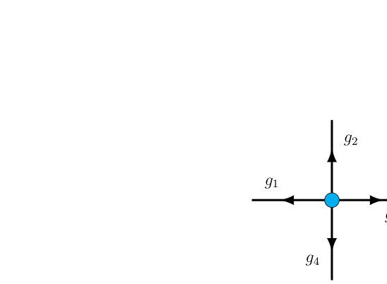
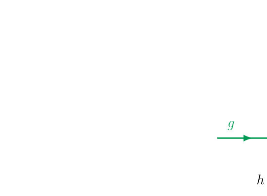
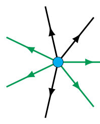
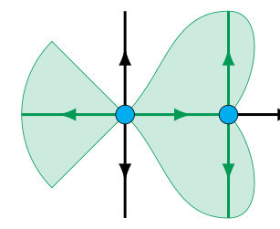
Summary. This paper explores how non-invertible symmetries, such as those found in string-net models, affect the locality of physical operators on a lattice. It demonstrates that while standard locality principles like Haag duality can fail due to geometric 'cusps,' they can be recovered using a modified definition of local regions. This provides a rigorous foundation for understanding the algebraic structure of topological order with non-invertible symmetries.
Why it may be interesting. not directly relevant
Main problem. The paper investigates the validity of algebraic locality principles, specifically Haag duality and disjoint additivity, in lattice models subject to non-invertible Gauss laws.
Main result. The authors show that non-invertible magnetic constraints violate exact Haag duality for 'cusped' regions, but a weak form of duality is restored by adding a 'collar' to the region. Exact locality is recovered for 'cuspless' regions, such as those on trivalent lattices.
Method. The study employs the framework of von Neumann algebras and the representation theory of finite-dimensional C*-Hopf algebras to analyze operator algebras within constrained subspaces.
Model / system. The models studied are 2+1D lattice gauge theories, specifically quantum double models and extended string-net models, where a magnetic constraint is imposed exactly via a non-invertible symmetry.
Key observables. Haag duality, disjoint additivity, Wilson line operators, and character operators.
Important parameters / regimes. The presence of non-invertible (non-group-like) symmetries and the geometric properties of the lattice (cusped vs. cuspless regions).
Assumptions / limitations. The analysis is restricted to bosonic algebras, closed lattices, and finite-dimensional C*-Hopf algebras with an involutive antipode.
Figures summary. Figures illustrate the geometric action of Wilson lines, the difference between cusped and cuspless vertices, and the construction of 'collared' regions to restore duality.
Paper structure. The paper introduces the problem of non-invertible Gauss laws, develops the Hopf-algebraic framework for magnetic constraints, provides counterexamples for Haag duality violation in cusped regions, proves weak duality/additivity for general regions, and demonstrates exact locality for trivalent lattices.
We study algebraic locality principles on a 2+1D closed lattice in the presence of a Gauss law for a non-invertible symmetry. Prior work in arXiv:2509.03589 showed that when enforcing the Gauss law of an invertible symmetry, the principle of "Haag duality" is preserved exactly, and "disjoint additivity" is preserved after appropriate treatment of discreteness artifacts. Here we show that for a large class of non-invertible on-site symmetries, Haag duality is preserved exactly only for sufficiently nice, "cuspless" regions. For cusped regions, we instead have a weak form of Haag duality that requires adding a collar. Our results apply to double models with a purely magnetic constraint, and to the more general framework of constraints induced by the on-site action of a Hopf algebra. In particular, we treat a class of extended string-net models explicitly. We also demonstrate disjoint additivity for double models based on a group, and a weakened form of disjoint additivity in the setting of a general Hopf algebra.
Authors: Tatia Kiliptari, Vladimir I. Yudson, Dmitrii L. Maslov
Type: theory · Category: strongly correlated electrons · PDF: https://arxiv.org/pdf/2605.21774v1
Analysis basis: full PDF text, analyzed in chunks
Topic relevance: Keldysh / 2PI / non-Gaussian methods 2/5
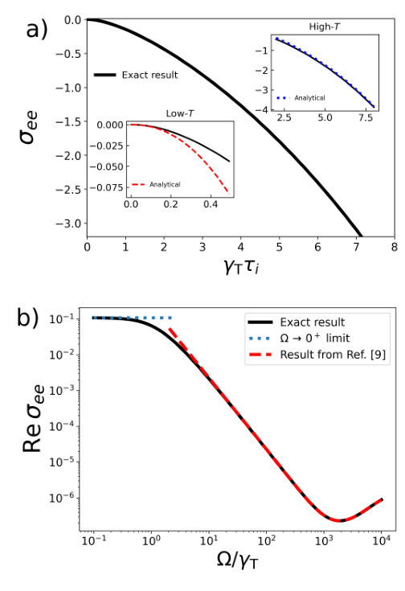
Summary. This paper provides an exact solution for the conductivity of a non-Galilean-invariant Fermi liquid under various interaction models. It corrects previous misconceptions by demonstrating that electron-electron interactions influence transport only through the quasiparticle lifetime. The work also provides a way to access the optical response in the hydrodynamic regime, which is otherwise inaccessible via perturbation theory.
Why it may be interesting. not directly relevant
Main problem. The paper aims to find an exact expression for the conductivity of a non-Galilean-invariant Fermi liquid across various temperature and frequency regimes, specifically clarifying the role of electron-electron interactions in current relaxation.
Main result. The authors derive an exact solution showing that electron-electron interactions affect conductivity solely through the quasiparticle scattering time, rather than a separate current relaxation rate, and provide the optical response in the hydrodynamic regime.
Method. The study solves the linearized semi-classical kinetic equation by mapping it onto an inhomogeneous Legendre-type differential equation and using the Eliashberg approximation for the Hertz-Millis model.
Model / system. A 2D non-Galilean-invariant Dirac system subject to both screened Coulomb interactions (treated via RPA) and $z=3$ Pomeranchuk critical interactions (Hertz-Millis model) in the presence of impurity scattering.
Key observables. DC resistivity, optical conductivity (real part), and quasiparticle scattering rate.
Important parameters / regimes. Frequency ($\Omega$), temperature ($T$), impurity scattering rate ($\gamma_i$), quasiparticle scattering time ($ au_{ee}$), and the Planckian scale ($\Omega \sim T$).
Assumptions / limitations. Neglect of exchange processes in the Coulomb model, neglect of mass renormalization in the Coulomb model, and the use of the Eliashberg approximation (local self-energy and small vertex corrections).
Paper structure. The paper begins by defining the kinetic equation and the physical models (Coulomb and Hertz-Millis), proceeds to the mathematical mapping onto a Legendre-type equation, derives the exact scaling form for conductivity, and concludes with an analysis of specific regimes (collisionless vs. hydrodynamic) and the role of mass renormalization.
We obtain an exact expression for the conductivity of a disordered, non-Galilean-invariant Fermi liquid by solving the kinetic equation with both screened Coulomb and $z=3$ Pomeranchuk critical interactions. While consistent with previous asymptotic results, our solution shows that electron-electron interactions enter the conductivity solely via the quasiparticle scattering time, $τ_\mathrm{ee}$. Accordingly, the crossovers between the collisionless and hydrodynamic regimes occur when $1/τ_\mathrm{ee}$ becomes comparable to the larger of the impurity scattering rate and the probe frequency, $Ω$. In addition, the exact solution yields the optical response in the hydrodynamic regime, $Ω\ll 1/τ_\mathrm{ee}$, which is inaccessible within perturbation theory. Near a $z=3$ Pomeranchuk quantum critical point, consistency between the kinetic-equation and Kubo approaches requires proper inclusion of mass renormalization within the Eliashberg approximation, which also ensures that the crossover between the collisionless and hydrodynamic regimes in the optical conductivity occurs at the Planckian scale $Ω\sim T$.
Authors: Wenbo Liu, Yiwen Zeng, Xueming Liu, Ginestra Bianconi
Type: theory · Category: statistical mechanics · PDF: https://arxiv.org/pdf/2605.22646v1
Analysis basis: full PDF text, analyzed in chunks
Topic relevance: non-equilibrium universality 2/5
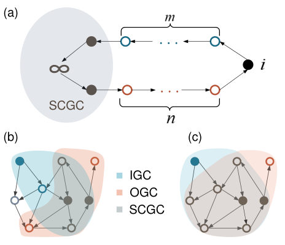
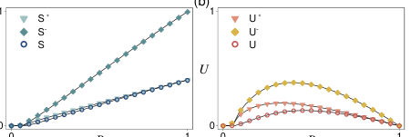
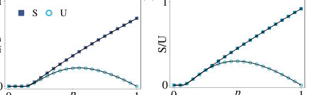
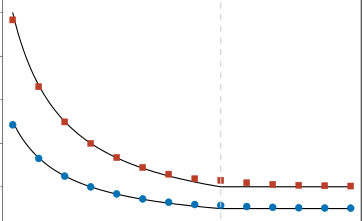
Summary. This paper explores a new model of directed extended-range percolation inspired by quantum communication. It demonstrates that network directionality can simplify the percolation problem and that degree correlations can lead to a vanishing percolation threshold in scale-free networks.
Why it may be interesting. not directly relevant
Main problem. The paper investigates how network directionality and degree correlations affect the percolation threshold and critical behavior in extended-range percolation models.
Main result. The authors show that directionality reduces combinatorial complexity and that in maximally correlated scale-free networks, the percolation threshold can vanish for certain power-law exponents.
Method. The study uses a message-passing approach and linearization of recursive equations to derive analytical solutions, which are then validated using Monte Carlo simulations.
Model / system. The model is Directed Extended-Range Percolation (DERP), where connectivity between trusted nodes is enabled by directed paths of maximum length R, potentially using untrusted nodes as relays.
Key observables. Percolation threshold (pc), order parameters (S, U, S(+), U(+)), and critical exponents (beta, beta_S, beta_U).
Important parameters / regimes. Interaction range (R), power-law exponent (gamma), and degree correlations (Uncorrelated vs. Maximally Correlated).
Assumptions / limitations. The analytical derivation assumes locally tree-like structures and omits specific discussion of logarithmic corrections at the critical point gamma = 3.
Figures summary. Figure 1 illustrates the DERP mechanism; Figure 3 compares simulation results with theoretical predictions for order parameters; Figure 4 shows the dependence of the threshold on parameters; and supplementary figures show effective exponent plateaus and scaling plots.
Paper structure. The paper introduces the DERP model and its motivation, develops a message-passing framework for analytical solutions, analyzes critical behavior across different network topologies (UC and MC), and validates results via Monte Carlo simulations.
While for standard percolation directionality is known to increase the combinatorial complexity of percolation, here we show that when connectivity is ensured by paths of length $R\geq 2$, network directionality, impeding backtracking, can significantly reduce the complexity of percolation. To illustrate this finding, we introduce Directed Extended-Range Percolation (DERP), defined directed networks with non-reciprocal edges, motivated by applications in quantum communication. In this framework, message transmission is enabled between trusted nodes separated by a directed path of length at most $R$. Using a message-passing approach, we show that directionality enables an exact determination of the percolation threshold and the anomalous critical indices on locally tree-like structures. On random directed networks we find that the critical behavior of DERP depends sensitively on degree correlations. These analytical predictions are corroborated by extensive Monte Carlo simulations, highlighting the profound impact of directionality and correlations on long-range connectivity in complex networks.
Authors: Yoshinori Hara, Yoshiyuki Kabashima
Type: theory · Category: disordered systems and neural networks · PDF: https://arxiv.org/pdf/2605.22254v1
Analysis basis: full PDF text, analyzed in chunks
Topic relevance: non-equilibrium dynamics 2/5
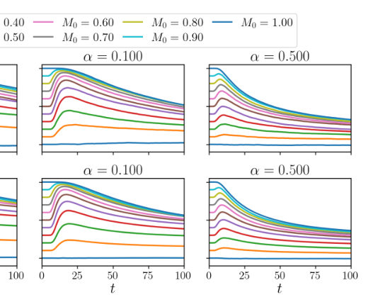
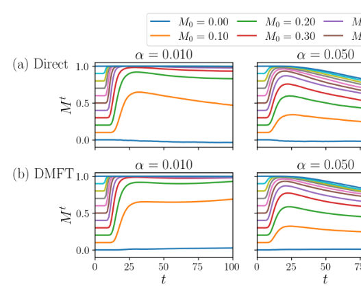
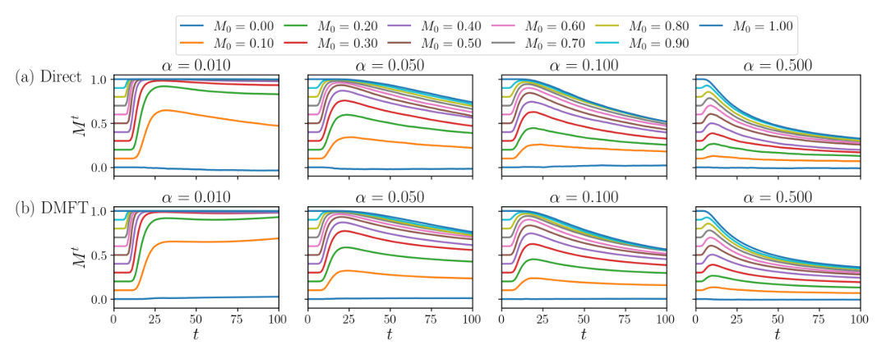
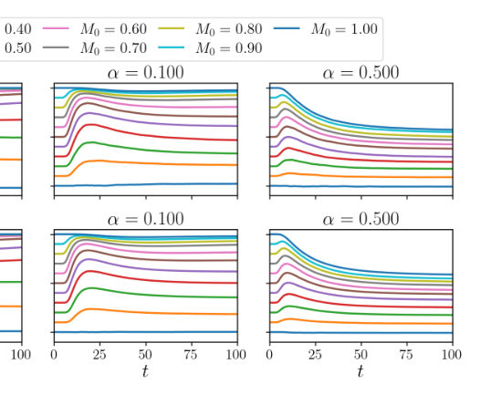
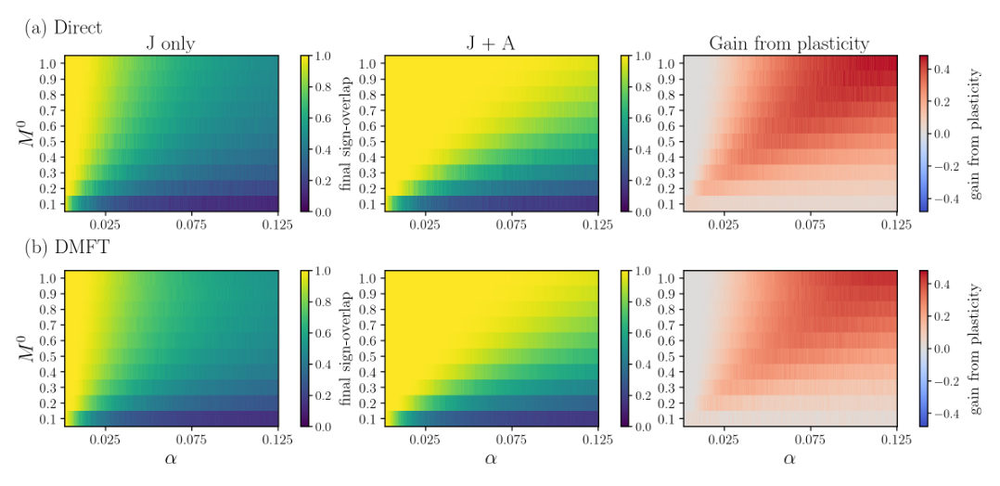
Summary. This paper studies how synapses that change alongside neurons affect memory in Hopfield networks. It finds that a moderate amount of plasticity helps the network remember patterns more robustly, but too much plasticity causes the network to mistakenly memorize the starting noise instead of the intended memory.
Why it may be interesting. not directly relevant
Main problem. Investigating how online, activity-dependent synaptic plasticity affects the memory retrieval dynamics, capacity, and stability of Hopfield-type associative memory networks.
Main result. Moderate plasticity enhances retrieval by creating a positive delayed feedback that stabilizes the target memory, but excessive plasticity leads to 'cue-imprinting failure' where the network stabilizes spurious attractors based on the initial cue.
Method. The authors use the generating-functional formalism to derive a Dynamical Mean-Field Theory (DMFT) that reduces the many-body dynamics to an effective single-site stochastic process, which is then validated via large-scale numerical simulations.
Model / system. A fully connected Hopfield-type associative memory network where neural states and synaptic couplings coevolve. The model includes fixed Hebbian couplings and time-dependent plastic couplings that evolve via an online Hebbian update rule.
Key observables. Memory retrieval overlap (M), memory load (alpha), basin of attraction size, and integrated feedback kernels (Onsager and plastic components).
Important parameters / regimes. Plasticity strength (beta or kA), memory load (alpha), learning rate (gamma), and initial overlap (M0).
Assumptions / limitations. The analysis assumes the thermodynamic limit (N to infinity), a fully connected network architecture, and an odd activation function (tanh).
Figures summary. Figures show the time evolution of overlap, heat maps of the basin of attraction, comparison of DMFT with direct simulations, and the decomposition of feedback kernels into Onsager and plastic components.
Paper structure. The paper introduces the problem of coevolving dynamics, derives the DMFT using generating functionals, presents numerical validation, analyzes the mechanism of feedback-driven stabilization, and discusses the optimization of plasticity strength.
We study a fully connected Hopfield-type associative memory network with online activity-dependent synaptic plasticity, where neural states and synaptic couplings coevolve during retrieval. Using the generating-functional formalism, we derive a dynamical mean-field theory (DMFT) in the large-system limit with extensively many stored random patterns, and show that the many-body dynamics reduces to an effective single-site stochastic process with colored Gaussian crosstalk noise and delayed feedback terms. Numerical solutions of the DMFT equations agree well with direct simulations. We find that moderate plasticity enlarges the basin of attraction and increases the maximum retrievable memory load by generating a positive delayed feedback that stabilizes retrieval against crosstalk noise. However, excessively strong plasticity causes the network to imprint the imperfect initial cue itself, leading to spurious attractors and degraded retrieval performance. Consequently, an optimal plasticity strength emerges from the trade-off between memory stabilization and premature cue imprinting. These results extend the DMFT description of associative memory to networks with coevolving neural and synaptic dynamics.
Authors: António Antunes, Apratim Kaviraj, Baishali Roy
Type: theory · Category: disordered systems and neural networks · PDF: https://arxiv.org/pdf/2605.22628v1
Analysis basis: full PDF text, analyzed in chunks
Topic relevance: Kondo & dissipative impurity 2/5
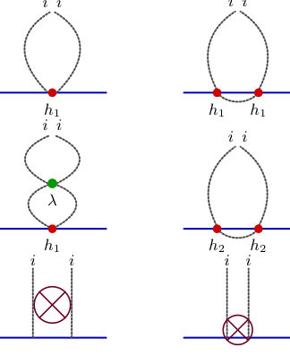
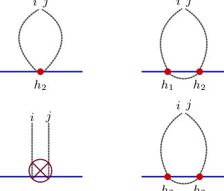
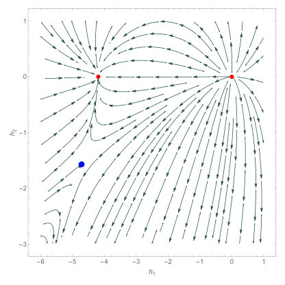
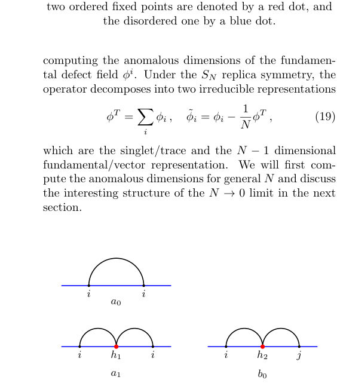
Summary. This paper explores how random magnetic fields on a surface can create new types of boundary conditions in critical systems. It specifically shows that these 'dirty' boundaries lead to the emergence of complex logarithmic structures in the theory's spectrum. This provides deeper insight into the interplay between disorder and criticality in the 3D Ising model.
Why it may be interesting. not directly relevant
Main problem. The study investigates how localized random magnetic fields on a 2D surface defect affect the boundary conditions and stability of the 3D Ising universality class.
Main result. The authors identify a new 'dirty' boundary condition fixed point and demonstrate the emergence of logarithmic conformal field theory structures in the replica limit.
Method. The researchers use the replica method for disorder averaging combined with Renormalization Group (RG) analysis and one-loop perturbative expansion in 4-epsilon dimensions.
Model / system. A massless interacting scalar field theory (Wilson-Fisher fixed point) in 4-epsilon dimensions featuring a 2D surface defect subject to a Gaussian random magnetic field and a local temperature term.
Key observables. Anomalous dimensions of bilinear defect operators, scaling dimensions of local operators, and one-point correlation functions of bulk composite operators.
Important parameters / regimes. The expansion parameter epsilon, the number of replicas N (taking the N to 0 limit), and the defect couplings h1 and h2.
Assumptions / limitations. The analysis assumes the validity of the epsilon expansion and focuses on the co-dimension 1 limit for the physical 3D case.
Figures summary. Figure 1 shows Feynman diagrams for same-replica contributions; Figure 2 shows diagrams for different-replica contributions; Figure 3 displays an RG flow plot with fixed points; Figure 4 illustrates diagrams for defect correlation functions.
Paper structure. The paper introduces the model of surface defects, applies the replica method to handle disorder, performs RG calculations to find fixed points and stability, analyzes the resulting operator spectrum, and discusses the emergence of logarithmic structures.
Real critical systems, such as uniaxial ferromagnets in the 3d Ising universality class, are constrained by boundaries and subject to random couplings. We consider the Wilson-Fisher fixed point in $4-ε$ dimensions subject to a random magnetic field localized on a two-dimensional surface, which becomes co-dimension 1 in the physical $ε\to1$ limit. Using the replica method for the disordered field, we find that the ordinary boundary condition is stable under disorder but also discover a non-trivial ``dirty" boundary condition which can be reached by tuning the disorder strength or the local temperature. We also investigate the logarithmic structure of the defect spectrum and how it emerges via the replica formalism.
Authors: Xiaochen Du, Juno Nam, Jaemoo Choi, Wei Guo, Sathya Edamadaka, Junyi Sha, Elton Pan, Yongxin Chen, Molei Tao, Rafael Gómez-Bombarelli
Type: theory · Category: numerical methods · PDF: https://arxiv.org/pdf/2605.21722v1
Analysis basis: full PDF text, analyzed in chunks
Topic relevance: methods for driven-dissipative 2/5
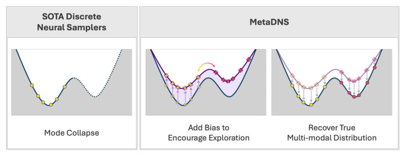
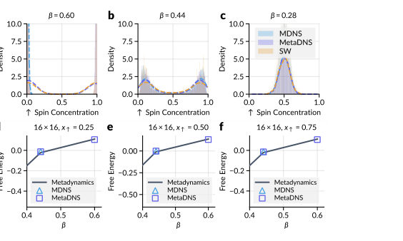
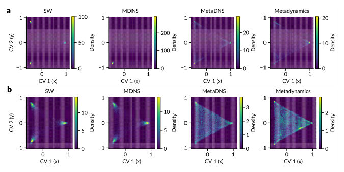
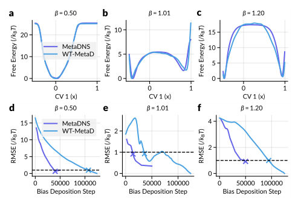
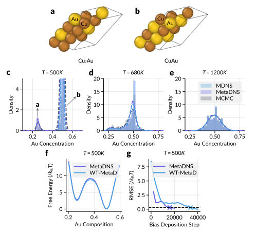
Summary. This paper introduces MetaDNS, a method that adds a history-dependent bias to neural samplers to prevent them from getting stuck in single energy minima. This allows the sampler to explore complex landscapes and accurately calculate free energies for systems like alloys and spin models. It provides a significant speedup in both exploration and inference compared to classical Monte Carlo methods.
Why it may be interesting. not directly relevant
Main problem. Discrete neural samplers like MDNS suffer from mode collapse and fail to explore high-energy barrier regions, preventing accurate free energy estimation and phase transition analysis.
Main result. The MetaDNS framework successfully overcomes mode collapse, enabling the reconstruction of free energy landscapes and achieving faster exploration and inference compared to traditional MCMC-based metadynamics.
Method. Integration of well-tempered metadynamics into discrete diffusion or autoregressive samplers using an adaptive, history-dependent bias potential along selected collective variables.
Model / system. The method is tested on the Ising model, the Potts model (q=3), and a Cu-Au binary alloy system using cluster expansion Hamiltonians.
Key observables. Magnetization, two-point correlation functions, energy distributions, gold concentration, free energy landscapes (PMF), and Jensen-Shannon divergence.
Important parameters / regimes. Inverse temperature (beta), bias factor (gamma), hill width (sigma), and initial hill height (h).
Assumptions / limitations. Assumes the neural sampler stays close to the biased target distribution and that the learning timescale is much faster than the bias update timescale.
Figures summary. Figure 1 shows the MetaDNS scheme; Figure 2 compares MDNS mode collapse vs MetaDNS in the Ising model; Figure 3 shows Potts model CV distributions; Figure 4 shows free energy convergence; Figure 5 illustrates Cu-Au alloy structures and concentration distributions; Figure 16 compares learning dynamics between MetaDNS and WT-MetaD.
Paper structure. The paper identifies the mode collapse problem in neural samplers, proposes the MetaDNS framework, details the mathematical integration of metadynamics with diffusion/autoregressive models, validates the method using Ising and Potts models, demonstrates application to the Cu-Au alloy, and performs sensitivity analyses on hyperparameters.
Sampling from discrete distributions with multiple modes and energy barriers is fundamental to machine learning and computational physics. Recent discrete neural samplers like MDNS suffer from mode collapse and fail to sample high-energy barrier regions between modes, which is critical for free energy estimation and understanding phase transitions. We propose Metadynamics Discrete Neural Sampler (MetaDNS), a general framework integrating well-tempered metadynamics into discrete diffusion or autoregressive samplers. By maintaining an adaptive, history-dependent bias potential along selected low-dimensional coordinates, MetaDNS forces exploration of previously inaccessible regions, enabling free energy reconstruction infeasible with standard neural samplers due to a lack of high-energy samples. On challenging low-temperature benchmarks including Ising, Potts, and the copper-gold binary alloy, MetaDNS reproduces the thermodynamic distribution. Compared to MCMC-based metadynamics, MetaDNS also achieves comparable exploration requiring fewer bias deposition steps.
Authors: Johannes Hirn
Type: theory · Category: disordered systems and neural networks · PDF: https://arxiv.org/pdf/2605.22691v1
Analysis basis: full PDF text, analyzed in chunks
Topic relevance: driven-dissipative phase transition 2/5
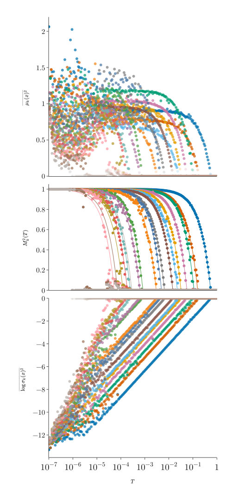
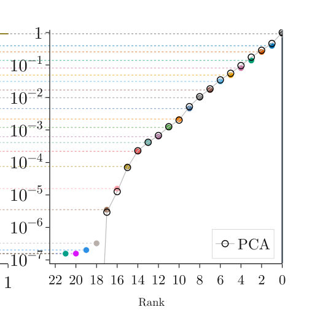
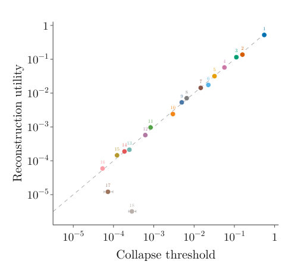
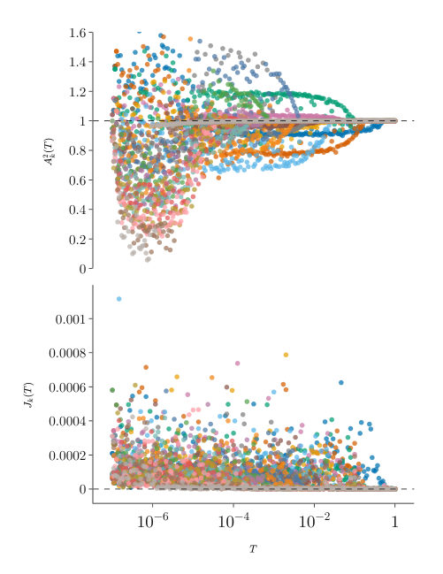
Summary. This paper reframes the 'failure' of posterior collapse in VAEs as a useful feature that automatically prunes unimportant latent dimensions. By treating the regularization parameter as an effective temperature, the author shows that latent modes disappear in a predictable sequence based on their contribution to data reconstruction.
Why it may be interesting. not directly relevant
Main problem. Reinterpreting posterior collapse in beta-VAEs from a training failure to a functional mechanism for automatic spectral pruning and identifying the relationship between latent mode collapse and reconstruction utility.
Main result. In linear Gaussian VAEs, the collapse threshold, reconstruction utility, and PCA explained variance coincide, demonstrating that increasing regularization triggers a predictable cascade of mode collapses.
Method. The author employs a Landau-style stability analysis to treat latent mode collapse as a phase transition and uses a beta-scan protocol to rank latent modes by their utility.
Model / system. The study focuses on beta-Variational Autoencoders (beta-VAEs), specifically analyzing the linear Gaussian case and testing the framework on the WorldClim global climatology dataset.
Key observables. Posterior signal fraction (M^2), collapse threshold (T_k), reconstruction utility (delta D_k), signal-to-noise ratio (SNR), and the Jensen gap.
Important parameters / regimes. Regularization strength (beta), effective temperature (T), and decoder variance (sigma^2_dec).
Assumptions / limitations. The primary theoretical derivation assumes a linear Gaussian VAE with a fixed isotropic decoder variance; the thermodynamic analogy is structural rather than a literal marginalization over microstates.
Figures summary. Figure 1 shows the collapse scan via posterior mean-square and signal fraction; Figure 2 compares truncated distortion to PCA; Figure 3 demonstrates the utility-threshold duality; Figure 4 shows posterior-scale and Jensen-gap diagnostics.
Paper structure. The paper introduces the problem of posterior collapse, develops a Landau-style stability theory for mode inactivation, establishes the duality between collapse and utility in Gaussian models, and validates these findings via experiments on the WorldClim dataset.
We show that posterior collapse in $β$-VAEs implements automatic spectral pruning. A latent mode collapses if its contribution to reconstruction is below the cutoff set by $β$. Equilibrium solutions with different $β$ thus reveal a cascade of collapses as latent modes decouple from least to most useful. We derive this as a consequence of the loss via a Landau stability analysis. We define a latent-rescaling-invariant order parameter that ranks active latent modes and whose collapse thresholds identify which effective variables to inspect first. In the linear Gaussian case, the collapse spectrum, utility spectrum, and normalized PCA spectrum coincide, and each collapse follows a mean-field law. We test these predictions on the WorldClim dataset.
Authors: James R. Wootton, Merlin Incerti-Medici, Daniel Bultrini, Pierre Fromholz
Type: theory · Category: quantum information and computing · PDF: https://arxiv.org/pdf/2605.22744v1
Analysis basis: full PDF text, analyzed in chunks
Topic relevance: quantum measurements 2/5
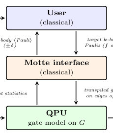
Summary. This paper proposes a new way to program quantum computers by specifying desired physical observables instead of complex gate sequences. It proves that this 'Motte model' is as powerful as the standard circuit model and provides a natural interface for NISQ-era algorithms like quantum imaginary time evolution.
Why it may be interesting. not directly relevant
Main problem. The need for a software-oriented quantum computing interface that uses physically observable quantities (Pauli expectation values) rather than complex unitary matrices, specifically addressing the constraints of the NISQ era.
Main result. The authors introduce and prove the universality of the 'Motte model,' a framework where gates are specified by Pauli constraints, showing it is equivalent to the standard circuit model with polynomial overhead.
Method. The model uses k-body quantum state tomography to reconstruct reduced density matrices, which are then used to analytically deduce unitaries via eigenstate or density matrix transformations.
Model / system. A software-oriented model of quantum computation (the Motte model) acting as an interface for a standard gate-model QPU with N qubits and a connected coupling graph G.
Key observables. Pauli expectation values (X, Y, Z) and k-local Pauli correlators.
Important parameters / regimes. N (number of qubits), D (circuit depth), k (tomographic locality), and delta (statistical sampling error).
Assumptions / limitations. The underlying QPU is assumed to be noiseless for the theoretical definition, and statistical noise is assumed to be sufficient to lift eigenvalue degeneracies.
Figures summary. Figure 1 illustrates the Motte model workflow: user-provided Pauli targets lead to classical gate deduction, execution on a QPU, and iterative feedback via shot statistics.
Paper structure. The paper introduces the Motte model, establishes its computational universality (BQP equivalence), addresses the technical challenge of phase ambiguity in gate reconstruction, demonstrates practical applications like QITE and GHZ state preparation, and provides a complexity analysis.
We introduce a novel software-oriented model of quantum computation motivated by the practical constraints of near-term quantum hardware. In this model, gates are specified by constraints expressed in terms of Pauli observables, with each disjoint layer of gates accompanied by a pairwise or $k$-local quantum state tomography of the device. We prove that the model is equivalent to the coupling-graph-restricted circuit model and hence universal for BQP, with a polynomial overhead: simulating a depth-$D$ circuit on $N$ qubits requires at most $O(D^2 N \log N)$ complexity. The model formalizes an idiom shared by existing work that ranges from quantum imaginary time evolution for the study of quantum systems to the use of quantum computers for procedural generation in games. It therefore provides a natural interface for designing quantum software entirely in terms of physically observable quantities, relevant for the NISQ era and into fault-tolerance.
Authors: Pandiscia Carlo
Type: theory · Category: other · PDF: https://arxiv.org/pdf/2605.22264v1
Analysis basis: full PDF text, analyzed in chunks
Topic relevance: quantum measurements 2/5
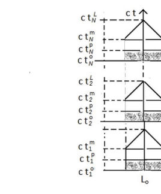
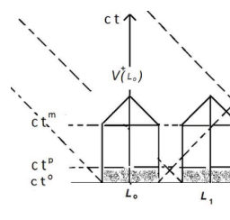
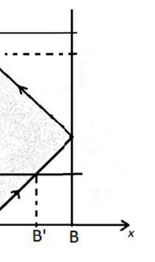
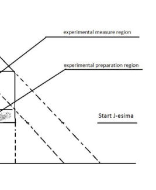
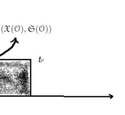
Summary. This paper provides a mathematical and conceptual synthesis of algebraic quantum theory and quantum probability. It argues for an operationalist approach where physical quantities are defined by their measurement procedures rather than purely abstract mathematical axioms. The result is a framework that maintains a connection between formal algebraic structures and empirical laboratory practice.
Why it may be interesting. not directly relevant
Main problem. The paper seeks to bridge the gap between abstract algebraic quantum theory (such as C*-algebras) and the practical, operational reality of laboratory measurement procedures.
Main result. The author develops a conceptual framework that links algebraic formulations with quantum probability, demonstrating how a statistical model of measurement can lead to the reconstruction of algebraic structures like von Neumann algebras.
Method. The work uses a synthesis of existing models (von Neumann, Mackey, Segal) employing mathematical tools from measure theory, functional analysis, and operator algebra theory.
Model / system. The framework is based on a hypothetical 'Laboratory System' involving experimental procedures, measurement instruments, and a localized space-time region equipped with a clock.
Key observables. Physical quantities defined through measurement, including compatible/incompatible observables, joint spectra, and temporal evolution of observables.
Important parameters / regimes. L-uniform continuity of state transformations, spectral properties, and the distinction between axioms, postulates, and technical assumptions.
Assumptions / limitations. The laboratory is spatially limited; time is measured by an internal clock; and physical quantities are only considered to exist if an effective experimental measurement method is available.
Paper structure. The paper is structured into two main parts: Part I focuses on laboratories and experimental procedures (statistics, reproducibility, and entropy), while Part II establishes the mathematical framework for these procedures (Mackey's model, spectral properties, and algebraic interpretation).
This work develops a conceptual framework for the foundations of quantum physics, linking two main approaches: the algebraic formulation and quantum probability. Rather than proposing new axioms or theories, the text reorganizes and synthesizes existing models, highlighting their assumptions, conceptual structures, and operational significance. The analysis begins with von Neumann's measurement theory and its subsequent developments by Mackey, emphasizing the role of experimentally feasible procedures and the need for a statistical model grounded in laboratory practice. The work adopts an operational perspective, according to which physical quantities are defined solely through experimental measurement methods, and the corresponding probabilistic measures are derived from measurement outcomes. The introduction critically examines the limitations of purely mathematical formulations - such as the algebraic method - when separated from experimental interpretation. The text argues for a clear distinction between axioms, postulates, and presuppositions, and for a reconstruction of quantum theory that respects both empirical constraints and conceptual clarity. Overall, the goal is to provide a coherent path from operational principles to algebraic structures, offering a basis for an axiomatic reformulation of quantum mechanics that remains faithful to physical practice.
Authors: Ritsuki Hirabayashi, Masataka Kakoi, Ryota Ueda, Kazuhiko Kuroki, Tatsuya Kaneko
Type: theory · Category: strongly correlated electrons · PDF: https://arxiv.org/pdf/2605.22128v1
Analysis basis: full PDF text, analyzed in chunks
Topic relevance: Kondo & dissipative impurity 2/5
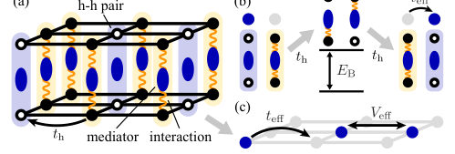
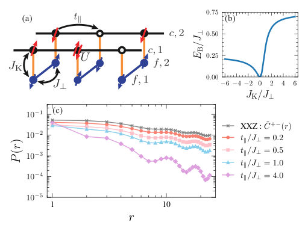
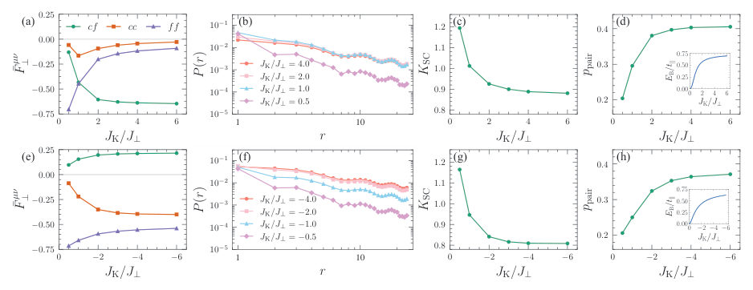
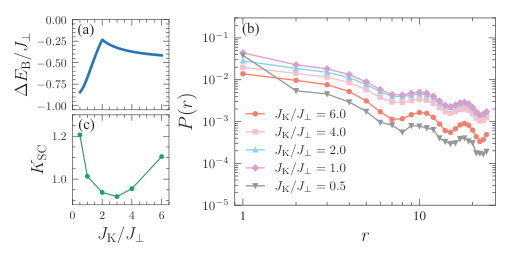
Summary. This paper shows that superconductivity can emerge in complex spin multimer systems through a robust pairing mechanism. By mapping the double Kondo lattice model to a hardcore boson model, the authors demonstrate that pair correlations persist even when moving away from the strong-coupling limit. This provides a general guideline for finding superconductivity in multi-orbital or multi-layer materials like nickelates.
Why it may be interesting. not directly relevant
Main problem. Investigating the mechanism of pair formation and the robustness of superconductivity in doped spin multimer systems, specifically determining if pairing signatures persist away from the strong-binding-energy limit.
Main result. The authors demonstrate that hole-doped spin multimer systems exhibit a crossover from a BEC-like state to a more extended state while maintaining power-law pair correlations, and that these correlations are robust against variations in local spin structure provided the binding energy is sufficient.
Method. The study uses second-order perturbation theory to derive an effective hardcore boson model and employs the Density-Matrix Renormalization Group (DMRG) method for numerical simulations.
Model / system. A 1D double Kondo lattice model (a ladder structure) consisting of itinerant electrons interacting with localized spins via Kondo coupling ($J_K$) and interchain spin exchange ($J_{\perp}$).
Key observables. Binding energy ($E_B$), pair correlation function $P(r)$, spin gap ($\Delta_s$), and the decay exponent $K_{SC}$.
Important parameters / regimes. Kondo coupling ($J_K$), interchain spin exchange ($J_{\perp}$), intrachain hopping ($t_{\parallel}$), interchain hopping ($t_{\perp}$), and on-site Coulomb repulsion ($U$).
Assumptions / limitations. The system is analyzed in the limit of large $U$ and assumes the low-energy physics can be mapped onto a universal hardcore boson/XXZ model in the strong-binding-energy limit.
Figures summary. The figures likely illustrate the binding energy as a function of coupling, the power-law decay of pair correlations, and the mapping between the Kondo lattice and the XXZ model.
Paper structure. The paper introduces the problem of pairing in multi-spin systems, derives an effective Hamiltonian via perturbation theory, presents DMRG numerical results for pair correlations and binding energy, and discusses the universality and robustness of the findings.
Binding energy, which quantifies pair formation, is a key factor in the emergence of superconductivity. Here, we show that even when multiple spins are complexly coupled, hole-doped systems, which can be mapped onto the universal hardcore boson model in the strong-binding-energy limit, exhibit promising signatures of superconductivity. We analytically and numerically demonstrate this concept in the double Kondo lattice model. Using the density-matrix renormalization group method, we show that a pairing state is maintained via a crossover even for parameters away from the strong-coupling regime. Additionally, we find that once binding energies are sufficiently generated, pair correlations develop similarly regardless of the details of local spin correlations. Our findings suggest useful guidelines for research on superconductivity.
Papers from primary archives without highlighted authors or any topic match. Click to expand.
Authors: Marcel Kühn, Yoon Thelge, Bernd Rosenow
Type: both · Category: disordered systems and neural networks · PDF: https://arxiv.org/pdf/2605.22341v1
Analysis basis: full PDF text, analyzed in chunks
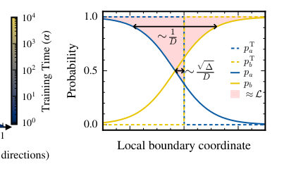
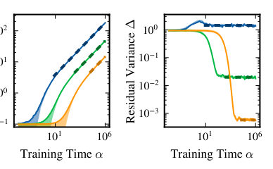
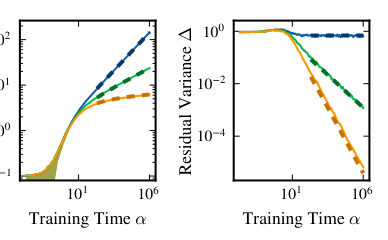
Summary. The paper provides a theoretical derivation of the 1/3 power-law scaling observed in online softmax classification. It demonstrates that this scaling arises from the dynamics of a boundary layer near decision boundaries. The authors also show that decaying the learning rate can improve the convergence exponent.
Why it may be interesting. not directly relevant
Main problem. Understanding the origin of the 1/3 power-law scaling in the generalization error and test loss of online softmax classification.
Main result. The study identifies a boundary-layer mechanism where the mismatch between smooth softmax loss and hard labels drives a 1/3 scaling law, which can be improved toward 1/2 via learning rate annealing.
Method. Statistical physics of learning using order-parameter methodology in the thermodynamic limit, combined with boundary-layer asymptotic analysis and numerical simulations.
Model / system. A one-layer K-class teacher-student model using online stochastic gradient descent with Gaussian, correlated Gaussian, and whitened ViT features.
Key observables. Generalization error (epsilon_g), test loss (L_g), centered student-teacher alignment (D), and residual student variance (Delta).
Important parameters / regimes. Learning rate (eta) and its decay exponent (gamma), number of classes (K), and input covariance/anisotropy (beta).
Assumptions / limitations. Thermodynamic limit (N to infinity), permutation symmetry, fixed features, and the 'almost-perfect-learning' regime where the margin is large.
Figures summary. Figure 1 shows the 1/3 power law for loss and error; Figure 2 validates dynamics for K=3; Figure 3 shows the effect of learning rate schedules; Figure 5 shows robustness to input correlation; Figure 6 shows scaling with the number of classes; Figure 7 shows performance on whitened ViT features.
Paper structure. The paper introduces the scaling problem, derives the exact macroscopic dynamics for centered variables, provides an asymptotic boundary-layer evaluation to explain the 1/3 exponent, analyzes the effect of learning rate annealing, and concludes with robustness tests against non-Gaussian and correlated input distributions.
Hard-label classification is usually trained with smooth surrogate losses, most prominently softmax cross-entropy. We isolate an asymptotic mechanism by which this mismatch between smooth surrogate and discrete labels produces power-law learning curves in an online teacher-student model. After subtracting the mean logit, the thermodynamic-limit dynamics close in centered variables: a growing centered student-teacher alignment $D$ and the residual student variance $Δ$. At late times, examples away from teacher decision boundaries are already classified confidently and contribute exponentially little. Only boundary layers of width $O(D^{-1})$ remain active, while the noise of fixed-learning-rate online gradient descent maintains a nonzero $Δ$. As a function of the training time $α$ the late-time solution yields a $α^{-1/3}$ power law not only for the test loss but also for the generalization error $ε_g$, i.e., one minus test accuracy. This is much slower than the $α^{-1}$ Bayes-optimal reference for the same model. We further show that learning-rate schedules can improve the generalization error towards a $ε_g \sim α^{-1/2}$ power law. Simulations support the predicted order parameter dynamics and learning curves. Controlled experiments with correlated Gaussian inputs and whitened pretrained features show that data structure can dominate transients. Therefore, our result is an asymptotic, complementary mechanism rather than an alternative to spectral explanations of neural scaling laws.
Authors: Matheus Rufino, Rafael Duarte Marcelino, Julio Smanioto Garcia
Type: theory · Category: quantum information and computing · PDF: https://arxiv.org/pdf/2605.22569v1
Analysis basis: full PDF text, analyzed in chunks
Summary. This paper proposes a mathematically grounded way to quantify the risk of data being stolen today to be decrypted by future quantum computers. It demonstrates that risk assessment must account for the interaction between how vulnerable a cipher is and how accessible the data is, rather than just adding these risks together.
Why it may be interesting. not directly relevant
Main problem. Developing a formal, structurally justified framework to measure quantum cryptographic exposure under the 'Harvest Now, Decrypt Later' (HNDL) threat.
Main result. The paper proves that an effective exposure score must be multiplicative rather than additive to capture the necessary interaction between cryptographic vulnerability and operational exposure, and that migration efficiency is highest in the low-exposure regime.
Method. The authors use a probabilistic contest model based on the Tullock Contest Success Function and proportional hazards, validated via structural specification diagnostics like the Vuong statistic and penalized splines.
Model / system. A probabilistic model of an adversarial contest where the probability of compromise depends on the relative rates of an attacker's effort (driven by quantum vulnerability and reachability) versus a defender's remediation rate.
Key observables. Quantum vulnerability fraction (V), operational exposure (E), and the Information Exposure Quotient (IEQ).
Important parameters / regimes. Adversarial attack rate (lambda_A), defender's rate of data-value decay (mu), temporal hazard (H), and the defense-attack intensity ratio (theta).
Assumptions / limitations. Assumes attack and defense are constant-rate exponential processes, and that cryptographic vulnerability and operational reachability are asymptotically independent.
Figures summary. Figure 1 shows the structural organization of the exposure assessment; Figure 2(a) displays the IEQ surface over the vulnerability-exposure plane; Figure 2(b) illustrates how elasticities decrease toward zero in the saturation regime.
Paper structure. The paper introduces the HNDL problem, defines a mathematical framework using a contest model, provides structural proofs for the functional form of exposure, performs statistical validation of the model, and concludes with migration strategy implications.
An adversary copies your encrypted traffic today and waits for a quantum computer to decrypt it later. How exposed are you? We show that the functional form of the answer is not merely a calibration choice -- it is structurally justified by three assumptions about adversarial production and value-decay dynamics. Under those assumptions, the HNDL compromise probability factorises into a temporal hazard, a multiplicative cryptographic-vulnerability and operational-exposure term, and a saturation denominator governed by the defense-attack intensity ratio; the marginal sensitivity to each dimension is endogenous to the organisation's position in the vulnerability-exposure plane, not a fixed global constant. Additive scoring frameworks cannot reproduce this structure because the interaction between cryptographic vulnerability and operational exposure is absent by construction, regardless of calibration. The resulting framework provides a structurally grounded basis for operational HNDL exposure prioritisation under partial observability.
Authors: Yan Lu, Xiao-Feng Shi
Type: theory · Category: other · PDF: https://arxiv.org/pdf/2605.22276v1
Analysis basis: full PDF text, analyzed in chunks
Summary. This paper shows that the quantized motion of ultracold polar molecules in optical traps can be used to simulate the Asymmetric Quantum Rabi Model. It identifies a specific resonance that can degrade quantum gates and proposes optimized microwave pulse sequences to achieve high-fidelity entanglement despite motional effects.
Why it may be interesting. It connects fundamental light-matter interaction models (AQRM) to practical challenges in molecular quantum computing, specifically how motional degrees of freedom can be leveraged for new physics or must be mitigated for high-fidelity control.
Main problem. Investigating how the quantized motion of ultracold polar molecules in optical traps affects dipole-dipole interactions, specifically regarding the emergence of new physical models and the fidelity of quantum gates.
Main result. The authors demonstrate that molecular motion realizes an Asymmetric Quantum Rabi Model (AQRM) and identify a detrimental 'trap-dipole resonance' that must be avoided, while also proposing high-fidelity iSWAP and controlled-phase gates.
Method. The study uses analytical techniques like Bogoliubov transforms and displacement operators alongside numerical simulations using QuTiP to evaluate gate fidelities and energy spectra.
Model / system. The system consists of two ultracold polar molecules (e.g., NaCs) trapped in optical tweezers, where the coupling between their internal two-level states and their quantized motional modes realizes the Asymmetric Quantum Rabi Model.
Key observables. Quantum gate fidelity, energy spectra (eigenvalues/eigenstates), and population transfer to motional states.
Important parameters / regimes. Dipole-dipole interaction strength (J0), trap angular frequency (omega_z), microwave Rabi frequency (Omega_mu), and the coupling parameter (g).
Assumptions / limitations. Molecules are near the rovibrational ground manifold, radial motion is neglected, and the study focuses on the axial component of motion.
Figures summary. Figure 1 illustrates the trapped molecules and compares numerical vs. analytical energy spectra; Figure 2 shows the feasibility of tuning energy separations; Figures 5 and 7 demonstrate high gate fidelities for iSWAP and controlled-phase gates under thermal motional states.
Paper structure. The paper introduces the QM-DDI coupling, derives the AQRM Hamiltonian, identifies the trap-dipole resonance, and then evaluates the performance of specific quantum gate protocols (iSWAP and CZ) under motional effects.
Optically trapped ultracold polar molecules can have multiple long-lived states for coding quantum information, and can exhibit electric dipole-dipole interactions~(DDI) which enables entanglement generation. The general understanding on the quantized motion~(QM) of molecules in the traps is that it causes fluctuation of DDI. Here, we find that the molecular QM can realize an asymmetric quantum Rabi model, which is of specific importance in the study of fundamental physics. The molecular QM can also lead to an exotic trap-dipole resonance, resulting in excess population loss to uncoupled motional states, and, hence, should be avoided in a general quantum control over polar molecules. To examine the impact of QM on quantum computing based on polar molecules, we introduce two gate protocols, a fast iSWAP gate which can be realized by a global microwave pulse of pulse area smaller than $2π$, and a controlled-phase gate with an arbitrary controlled phase, and find that both gates can attain a high fidelity.
Authors: Takehisa Hasegawa, Kazuki Wataya, Tomoaki Nogawa
Type: theory · Category: statistical mechanics · PDF: https://arxiv.org/pdf/2605.22103v1
Analysis basis: full PDF text, analyzed in chunks
Summary. This paper demonstrates that site percolation on a diamond hierarchical lattice undergoes a BKT-type transition into a critical phase that lacks a giant cluster. It proves that exponential volume growth is not a prerequisite for critical phases, as the hierarchical structure and site dilution create persistent connectivity bottlenecks.
Why it may be interesting. not directly relevant
Main problem. The study investigates whether exponential volume growth is necessary for the emergence of critical phases in percolation and explores the nature of the phase transition in site percolation on a finite-dimensional fractal network.
Main result. The authors discover a Berezinskii-Kosterlitz-Thouless (BKT)-type transition characterized by an essential singularity in the correlation length, where a critical phase exists without a giant percolating cluster.
Method. The research employs exact generating-function analysis, renormalization-group (RG) recursion relations, and finite-size scaling (FSS) analysis, supplemented by Monte Carlo simulations.
Model / system. The system is site percolation on a Diamond Hierarchical Lattice (DHL), a finite-dimensional fractal network with fractal dimension d_f = 2 constructed via a recursive replacement rule.
Key observables. Conditional contact probability (P_n), correlation length (xi), fractal exponent (psi), susceptibility (chi), and cluster-size distribution.
Important parameters / regimes. Occupation probability (p), critical threshold (p_c = 27/32), and the generation number (n) of the lattice.
Assumptions / limitations. The derivation of scaling relations assumes that degree-2 nodes provide the dominant contribution to the root-cluster mass and that the correlation function follows a power-law decay.
Figures summary. Figure 1 shows the recursive construction of the DHL; Figure 2 demonstrates the sharpening of contact probability at p_c and the square-root singularity; Figure 4-6 show scaling of correlation functions, susceptibility, and data collapse via FSS; Figure 7 shows cumulative cluster-size distribution scaling.
Paper structure. The paper begins with the lattice construction and model definition, followed by the derivation of exact generating functions and RG recursion relations, an analysis of the phase transition and critical exponents, and concludes with finite-size scaling validation and discussion of the physical mechanism.
We study site percolation on the diamond hierarchical lattice, a finite-dimensional fractal network, using an exact generating-function analysis. In contrast to bond percolation, site percolation on this lattice does not undergo a transition from a nonpercolating phase to a percolating phase. Instead, the system exhibits a nonpercolating phase for $p
Authors: L. David Le Nir, Asimpunya Mitra, Yong Baek Kim
Type: theory · Category: strongly correlated electrons · PDF: https://arxiv.org/pdf/2605.21618v1
Analysis basis: full PDF text, analyzed in chunks
Summary. This paper demonstrates that non-uniform Berry curvature in a parent band can drive the formation of vortices within the momentum-space superconducting gap. It establishes a topological link between the parent band's Chern number and the resulting BdG topology, suggesting thermal Hall measurements as a way to detect these momentum-space vortices.
Why it may be interesting. not directly relevant
Main problem. Investigating how non-uniform Berry curvature in parent electronic states influences the emergence, topology, and experimental signatures of chiral superconductivity, specifically the formation of momentum-space vortices.
Main result. Non-uniform Berry curvature induces the nucleation of momentum-space vortices in the superconducting gap function, which lowers condensation energy and determines the BdG Chern number via the winding of a momentum-space phase current.
Method. Solving the full, non-linear BCS gap equation on a continuum Chern band using the $\lambda_N$-model and developing a gauge-invariant formulation for BdG Berry curvature.
Model / system. The $\lambda_N$-model, a tunable continuum platform for studying electronic states with non-uniform Berry curvature, motivated by rhombohedral graphene multilayers.
Key observables. Momentum-space vortices in the gap function, BdG Chern number, thermal Hall conductivity, and condensation energy.
Important parameters / regimes. Berry curvature strength (B), number of orbitals (N), interaction strength (U), interaction range ($\sigma$), and Fermi surface topology (circular vs. annular).
Assumptions / limitations. Assumes a single-band projected superconductor (class-D), neglects spin degrees of freedom, and assumes a large band separation to neglect inter-band processes.
Figures summary. Figure 1 shows Berry curvature distribution; Figure 2 displays the gap magnitude and phase; Figure 3 illustrates vortex number vs. Berry curvature strength; Figure 12/13 shows vortex number and condensation energy transitions; Figure 16 shows evolution in annular Fermi surfaces.
Paper structure. The paper introduces the problem of Berry curvature-induced superconductivity, defines the $\lambda_N$-model, presents the numerical solution of the gap equation, analyzes vortex nucleation and saturation regimes, derives the topological relation for the BdG Chern number, and discusses experimental signatures via thermal Hall effect.
We investigate chiral superconductivity emerging from parent electronic states with non-uniform Berry curvature, motivated by recent experiments in rhombohedral graphene multilayers. Using the continuum $λ_N$-model-a tunable platform with independently controllable Berry curvature profiles-we solve the full BCS gap equation on a continuum Chern band beyond the weak-coupling limit. We find that a non-uniform Berry curvature of the parent band enriches the superconducting order parameter, leading to the formation of momentum-space vortices in the gap function away from high-symmetry points. By tuning the Berry curvature profile, we identify distinct regimes associated with vortex nucleation and vortex number saturation, and show that the nucleation of momentum-space vortices tends to lower the condensation energy. We then show analytically that the parent band Chern number constrains the number of momentum-space vortices that can nucleate in the gap-independent of details of the $λ_N$-model. We also provide a gauge-invariant formulation for computing the Bogoliubov-de Gennes (BdG) Berry curvature for continuum models, and find that it is determined by a momentum-space phase current. The winding of this current around vortices in the occupied region in turn determines the BdG Chern number. Finally, we discuss how thermal Hall measurements can be used to probe the formation of momentum-space vortices. Our results highlight the crucial role of Berry curvature in shaping chiral superconductivity, and offer guiding principles for its identification in systems such as rhombohedral graphene.
Authors: Kevin Hernández
Type: theory · Category: other · PDF: https://arxiv.org/pdf/2605.21791v1
Analysis basis: full PDF text, analyzed in chunks
Summary. This paper provides the rigorous mathematical proof that the eigenfunctions of the Klein-Gordon oscillator are complete in one and three dimensions. By linking the KGO to the properties of Hermite and Laguerre polynomials, it justifies the use of spectral representations for Green's functions and partition functions in relativistic scalar models.
Why it may be interesting. not directly relevant
Main problem. The paper aims to establish the formal completeness (closure relations) of the Klein-Gordon oscillator (KGO) eigenfunctions in one and three spatial dimensions, filling a gap in the literature where such proofs existed for the Dirac oscillator but not the KGO.
Main result. The author proves that the KGO eigenfunctions form a complete orthonormal set in L2(R) and L2(R3) by reducing the problem to the known closure relations of Hermite and generalized Laguerre polynomials.
Method. A constructive proof approach is used, employing separation of variables, reduction to the confluent hypergeometric equation, and the application of properties of special functions and spherical harmonics.
Model / system. The system is the Klein-Gordon oscillator, a relativistic generalization of the harmonic oscillator for spin-0 particles, where the potential is introduced via minimal substitution p -> p - imw r.
Key observables. Energy eigenvalues (E_n^2 and E_N^2) and the energy spectrum degeneracy.
Important parameters / regimes. Mass (m), oscillator frequency (w), and the non-relativistic (m -> infinity) and massless (m -> 0) limits.
Assumptions / limitations. The particle is treated as a scalar field; the proof is limited to 1D and 3D spatial dimensions and does not cover 2D or curved spacetimes.
Paper structure. The paper presents a mathematical proof for 1D completeness using Hermite polynomials, followed by a 3D proof using radial Laguerre polynomials and angular spherical harmonics, concluding with a comparison to the Dirac oscillator and discussion of future extensions.
Completeness of the Klein--Gordon oscillator eigenfunctions is proved in one and three spatial dimensions. The proofs establish the closure relations satisfied by the eigenfunctions and are based on standard properties of the Hermite and the generalized Laguerre polynomials, supplemented in three dimensions by the completeness of the spherical harmonics. The scalar nature of the Klein--Gordon field renders the argument strictly simpler than the analogous proof for the Dirac oscillator: no off-diagonal cancellation is required.
Authors: Adam Wills, Michael E. Beverland, Lev S. Bishop, Jay M. Gambetta, Patrick Rall, Vikesh Siddhu, Andrew W. Cross
Type: theory · Category: quantum information and computing · PDF: https://arxiv.org/pdf/2605.21898v1
Analysis basis: full PDF text, analyzed in chunks
Summary. This paper proposes a new quantum error correction architecture that concatenates algebraic outer codes with high-rate quantum LDPC inner codes. By treating inner code blocks as large-alphabet 'Galois qudits,' the scheme overcomes correlated error issues and provides a scalable path to the teraquop regime with significantly reduced space overhead.
Why it may be interesting. not directly relevant
Main problem. Scaling high-rate quantum LDPC codes is difficult due to the 'discrete family' problem and the presence of correlated errors within high-rate inner code blocks. The authors seek to achieve the 'teraquop regime' with efficient space overhead and robust fault tolerance.
Main result. The authors demonstrate that concatenating quantum Reed-Solomon outer codes over 'gross' inner codes allows access to the teraquop regime with lower space overhead than existing architectures. They also prove that a lightweight fault-tolerance scheme, which fails for qubits, is effective for large-alphabet qudits.
Method. The approach uses code concatenation where inner code blocks are treated as single logical Galois qudits. They employ list decoding, a 'time-like' Reed-Solomon protection for syndrome extraction, and a 'spacetime error mixing' technique to bound failure probabilities.
Model / system. A modular superconducting hardware architecture using Bivariate Bicycle (BB) codes, specifically the [[144, 12, 12]] 'gross' code, concatenated with quantum Reed-Solomon outer codes operating on large-alphabet Galois qudits (q=2048).
Key observables. Logical error rates, space overhead (physical-to-logical qubit ratio), and block weight of errors.
Important parameters / regimes. Physical noise rate of 10^-3, the teraquop regime (logical error rates of 10^-14 to 10^-13), and alphabet size q=2048.
Assumptions / limitations. Assumes catastrophic errors are predominantly localized to individual chips and that non-local connectivity costs scale non-uniformly with range and degree.
Figures summary. Figure 1 compares space overheads across various architectures (surface code, yoked surface codes, etc.) under a 500,000 physical qubit constraint, showing the concatenated gross code's path to the teraquop regime. Figure 4 illustrates the global memory system layout and the syndrome extraction process.
Paper structure. The paper introduces the problem of scaling qLDPC codes, proposes a concatenated architecture using Galois qudits, develops a fault-tolerant syndrome extraction protocol, provides a mathematical framework for error bounding via error mixing, and concludes with performance analysis in the teraquop regime.
Different quantum error correction schemes trade off overhead, error suppression, and hardware connectivity. Code concatenation can relax these tradeoffs by using an outer code whose non-local connectivity is supplied by logical operations of an inner code rather than directly by hardware. Prior works showed that this can reduce memory overhead for local low-rate inner codes such as the surface code. Here, we study concatenation over non-local, high-rate inner codes. Such inner codes experience correlated errors among the many logical qubits in a single codeblock. We handle this by treating each block as a single logical Galois qudit, enabling concatenation with algebraic outer codes with excellent parameters and, crucially, list decoders. In particular, we consider a memory system formed by concatenating quantum Reed-Solomon outer codes over the gross code. For fault-tolerant syndrome extraction, we develop a Galois qudit Shor scheme using "time-like" Reed-Solomon protection against measurement errors. Interestingly, a lightweight fault tolerance scheme, that would fail for qubits, works well for large-alphabet qudits, suggesting a very different theory of fault tolerance for such qudits. The whole protocol is optimised via improved bicycle instruction logical error rates, novel compilation strategies, and recent decoder post-selection rules. At uniform $10^{-3}$ physical noise, the concatenated gross code reaches the teraquop regime, which it previously could not access, with a lower space overhead than the $288$-qubit two-gross code, while offering several advantages from the engineering standpoint. Beyond our main case study, we believe the core ideas of Galois qudits, quantum Reed-Solomon outer codes, and list decoding, will prove generically powerful and highly transferable ideas across high-rate quantum architectures.
Authors: Lucas Fernandez Sarmiento
Type: both · Category: disordered systems and neural networks · PDF: https://arxiv.org/pdf/2605.21648v1
Analysis basis: full PDF text, analyzed in chunks
Summary. The paper provides a theoretical framework to understand how dropout shifts the critical point of signal propagation in deep networks. It discovers that activation function smoothness determines the network's universality class and proves that applying dropout more heavily to early layers optimizes performance by preventing rank collapse.
Why it may be interesting. not directly relevant
Main problem. Understanding how dropout acts as a relevant perturbation that deforms the edge-of-chaos phase diagram and determining the optimal depth-dependent dropout schedule to prevent rank collapse.
Main result. Identified distinct universality classes for smooth vs. kinked activations and demonstrated that front-loading dropout (concentrating it in early layers) significantly improves generalization and prevents token diversity decay.
Method. Mean-field theory using a Landau-style expansion and renormalization group-like analysis of signal propagation, supplemented by numerical simulations on MLPs and Vision Transformers.
Model / system. Deep neural networks, specifically Multi-Layer Perceptrons (MLPs) and Vision Transformers (ViTs), analyzed in the infinite-width/large-channel limit.
Key observables. Order parameter (m), correlation length (xi), correlation susceptibility (chi), effective rank (participation ratio), and test loss/accuracy.
Important parameters / regimes. Dropout strength (h), detuning from criticality (t), activation function smoothness, and network depth/width ratio.
Assumptions / limitations. Assumes the large-width limit (L/N << 1) to control non-Gaussian corrections and i.i.d. Gaussian initialization.
Figures summary. Training curves for loss and accuracy under different schedules, visual comparisons of component-level ablations (Attention vs. MLP), and scaling collapse plots for different dropout strengths.
Paper structure. The paper introduces the problem of dropout-induced deformation of the critical point, develops a mean-field theory for smooth and kinked activation universality classes, derives scaling laws and optimal scheduling via variational calculus, and validates these predictions through empirical tests on MLPs and ViTs.
We develop a mean-field theory of dropout as a perturbation of critical signal propagation at the edge of chaos. Dropout shifts the perfect-alignment fixed point, making the depth scale for information propagation finite even at critical initialization. We derive critical and crossover scaling laws for correlation decay and establish that smooth activations and kinked, ReLU-like activations constitute distinct universality classes, with different critical exponents and a universal two-parameter scaling collapse in detuning and dropout strength. The distinction traces to the analytic structure of the correlation map: smooth activations admit a Taylor expansion near perfect alignment, while kinked activations develop a branch point with universal non-analyticity. As a corollary, the framework yields saturated dropout profiles under fixed budget; a rank-flow tie-breaker then selects front-loaded schedules, substantially reducing held-out test loss at no extra computational cost, with accuracy gains as a consistent secondary effect. We test the predictions in MLPs and Vision Transformers and discuss CNN/ResNet extensions.
← Index · ← Previous · Next →